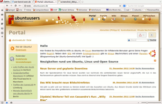
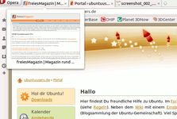
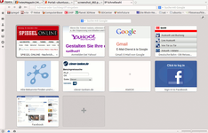
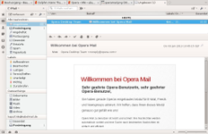

Opera 12
Archivierte Anleitung
Dieser Artikel wurde archiviert, da er - oder Teile daraus - nur noch unter einer älteren Ubuntu-Version nutzbar ist. Diese Anleitung wird vom Wiki-Team weder auf Richtigkeit überprüft noch anderweitig gepflegt. Zusätzlich wurde der Artikel für weitere Änderungen gesperrt.
Anmerkung: Opera 12 wird nicht mit Sicherheitsaktualisierungen versorgt! Die letzte Version ist von 2013!
Opera  ist ein kostenlos erhältliches Programm des norwegischen Unternehmens Opera Software ASA, das Webbrowser, E-Mail, News bzw. RSS Feeds und weitere Werkzeuge vereint. Neben Versionen für viele verschiedene Betriebssysteme wird der Browser auch für mobile Geräte wie Mobiltelefone, Handhelds und PDAs angeboten.
ist ein kostenlos erhältliches Programm des norwegischen Unternehmens Opera Software ASA, das Webbrowser, E-Mail, News bzw. RSS Feeds und weitere Werkzeuge vereint. Neben Versionen für viele verschiedene Betriebssysteme wird der Browser auch für mobile Geräte wie Mobiltelefone, Handhelds und PDAs angeboten.
Die Gründe, weshalb Opera trotz starker Konkurrenz durch andere Browser eine treue Fan-Gemeinde hatte, lag neben der vielfältig anpassbaren Oberfläche insbesondere an der Geschwindigkeit – Opera 12 galt als einer der schnellsten Browser. 2013 wurde seitens des Herstellers eine Neuausrichtung beschlossen, die sich allerdings auf Windows und Mac OS X konzentrierte. Seit Dezember 2014 wird das "neue" Opera, das nun auf Chromium basiert, auch wieder für Linux angeboten – allerdings ohne Zusatzprogramme wie den E-Mail-Client. Außerdem fehlen viele die früheren Alleinstellungsmerkmale.
Hinweis:
Die Version 12.16 wurde im Juli 2013 veröffentlicht und kann noch installiert werden, wird aber nicht mehr weiterentwickelt. Im Gegensatz zu anderen Webbrowsern war und ist Opera weder freie Software noch Open Source.
Neben der neuen auf Chromium basierenden Version bewerben sich zwei weitere Projekte um die Nachfolge: Vivaldi und Otter  .
.
|  |
| Opera 12 in Aktion |
|  |
| Vorschau der Reiter (Tabs) |
|  |
| Speed Dial |
|  |
| Integrierter Mail-Client (Opera Mail) |
Funktionsübersicht¶
Eine kleine Auswahl der unterstützten Funktionen:
Benutzeroberfläche mit Reitern inkl. Tab Stacking
E-Mail-Client - E-Mail-, News- und RSS-Reader samt Adressbuch (nur bis Opera 12.16)
IRC-Client zur Teilnahme am Internet Relay Chat
BitTorrent-Client
Import- und Exportfunktion von Lesezeichen (Bookmarks/Favoriten) diverser Browser wie Internet Explorer, Firefox und Konqueror
Schnellzugriffseite (Speed Dial)
Einrichtung¶

Archiv/Opera 12/Installation - Installieren, deutsche Sprache einstellen, mehrere Versionen gleichzeitig nutzen
Archiv/Opera 12/Plugins - Einrichtung von Plugins für Java, Flash und Video-Streaming
Archiv/Opera 12/Datenmigration - Daten im/exportieren
Archiv/Opera 12/E-Mail - nur bis Opera 12.16
ARchiv/Opera 12/IRC - Einrichten und Nutzen
Tipps und Tricks¶

Archiv/Opera 12/Tipps - Suchmaschinen, Werbeblocker etc. einrichten
Archiv/Opera 12/Anpassen - Opera an Desktop-Umgebung anpassen
Archiv/Opera 12/Optik - Schriftprobleme, Widget- und Skin-Unterstützung
Problembehebung¶
Sicherheitsaktualisierungen sind immer nur in der neuesten Opera-Version enthalten (ältere Versionen werden nicht gepflegt). Treue Opera-Fans kennen das, aber alle anderen sollten dies zumindest wissen, bevor sie sich für Opera entscheiden.
 Programmübersicht
Programmübersicht- Erstellt mit Inyoka
-
 2004 – 2017 ubuntuusers.de • Einige Rechte vorbehalten
2004 – 2017 ubuntuusers.de • Einige Rechte vorbehalten
Lizenz • Kontakt • Datenschutz • Impressum • Serverstatus -
Serverhousing gespendet von